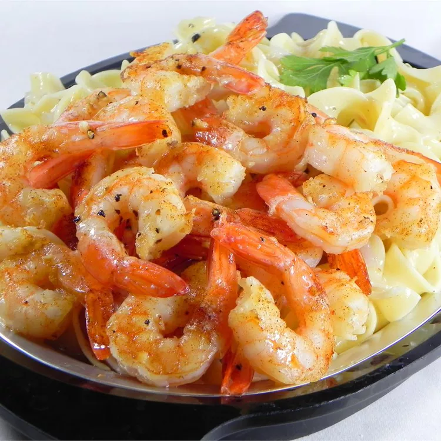

Home
Shrimp Scampi Recipe

Description
This simple but flavorful Scampi is sure to be a big hit.
Ingredients
- Medium shrimp
- Olive oil
- Melted butter
- Minced garlic
- Kosher salt
- Ground black pepper
Steps
- Preheat an oven to 350 degrees F (175 degrees C).
- Toss the shrimp in a bowl with the olive oil, melted butter, garlic, salt, and pepper; set aside for 10 minutes.
- Bake in the preheated oven until the shrimp are pink and cooked through, about 15 minutes.